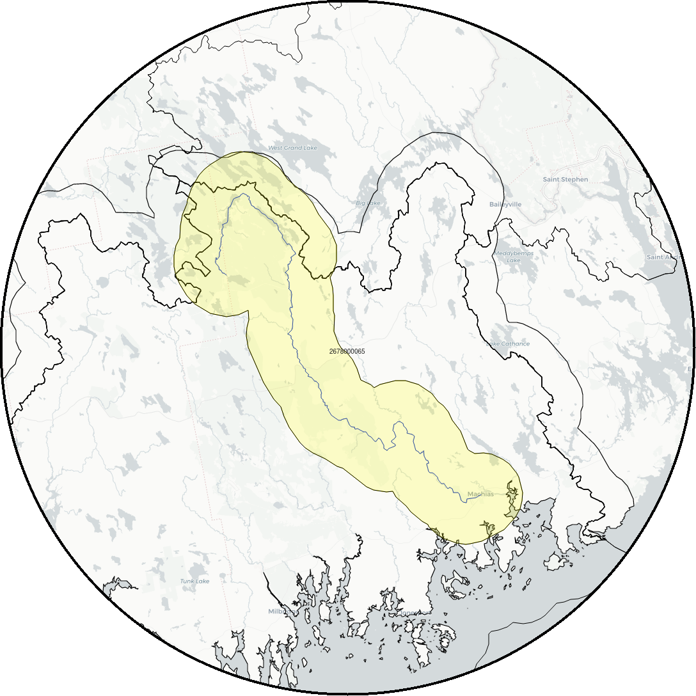

Flowline FIM
Goals:
- To walk through the use of prototype flowline data model within the FIM4 codebase.
- Document the FIM4 Pipeline using this format.
Outcomes and Takeaways:
- A deeper understanding of
- the semantics of the hydrofabric flowline model.
- The operational steps performed in the FIM4 Pipeline.


Slide layout: default Items linked/bordered in green are cited in the tooltip on hover.
: narrative-oriented Items linked/bordered in blue are hyperlinked to relevant resources.
Preliminary
Some Semantic Distinctions
Hydrofabric as a concept
- The HY_Features conceptual model attempts to standardize the language we use to describe “whatever exists as part of a network of waterbody and surface depressions and surface channels”.
Hydrofabric as a realization
- Flowpath: The HY_Features (OGC-16-032r2) engineering report interprets that concept to represent those flowpaths as a linear centerlines
- Divide: Divides are the polygon partitioning of the landscape
- Flowline: A flowline is a one-dimensional (linear) feature that represents a flowing body of water and is functionally similar to a flowpath but does not realize the catchment concept and as such does not have flow from or to a hydrologic nexus. A flowline should be thought of as a hydrographic connector with an inlet and an outlet that does not receive lateral flow from a hydrologic unit.
A Proposed Alteration
Hydrofabric as a concept
- The HY_Features conceptual model attempts to standardize the language we use to describe “whatever exists as part of a network of waterbody and surface depressions and surface channels”.
Hydrofabric as a realization
- Flowpath: The HY_Features (OGC-16-032r2) engineering report interprets that concept to represent those flowpaths as a linear centerlines
- Divide: Divides are the polygon partitioning of the landscape
- Flowline: A flowline is a one-dimensional (linear) feature that represents a flowing body of water and is functionally similar to a flowpath but does not realize the catchment concept and as such does not have flow from or to a hydrologic nexus.
A flowline should be thought of as a hydrographic connector with an inlet and an outlet that does not receive lateral flow from a hydrologic unit.
Some “Real-world” Situations
The FIM Codebase Process
The FIM Codebase Process

HAND <- terra::rast(file.path(path_to_fim4_unit_outputs,unit_to_map,"branches",branch_polys_selction$levpa_id,glue::glue("rem_zeroed_masked_{branch_polys_selction$levpa_id}.tif"),fsep = .Platform$file.sep))
HAND_values <- terra::values(HAND)
pal <- leaflet::colorNumeric(RColorBrewer::brewer.pal(5, "Blues"), c(min(HAND_values,na.rm = TRUE),max(HAND_values,na.rm = TRUE)),na.color = "transparent")
map1 <- leaflet::leaflet(options = leaflet::leafletOptions(preferCanvas = TRUE)) %>%
leaflet::addProviderTiles("CartoDB.Positron",group = "CartoDB.Positron") %>%
# leafem::addFeatures(data = sf::st_transform(wbd8_clp_inputs,sf::st_crs('EPSG:4326')),stroke=TRUE,fill=FALSE,opacity = 1,fillOpacity = 1,weight = 1.2,color="#000000") %>%
leafem::addFeatures(data = sf::st_transform(nearby_hucs,sf::st_crs('EPSG:4326')),stroke=TRUE,fill=FALSE,opacity = 1,fillOpacity = 1,weight = 1,color="#000000") %>%
leaflet::addRasterImage(HAND, colors = pal, opacity = 1,maxBytes=50*1024*1024) %>%
leafem::addFeatures(data = sf::st_transform(branch_polys_selction,sf::st_crs('EPSG:4326')),stroke=TRUE,fill=FALSE,opacity = 1,fillOpacity = 1,weight = 2,color="black") %>%
# leaflet::fitBounds(branch_0_bbox[3],branch_0_bbox[2],branch_0_bbox[1],branch_0_bbox[4])
leaflet::fitBounds(aoi_bbox[3],aoi_bbox[2],aoi_bbox[1],aoi_bbox[4])
# addLegend(pal = pal, values = terra::values(dem_meters), title = "Elevation data for Santander (mts)")
mapview::mapshot2(map1,file=file.path(path_to_tmp_output,glue::glue("test.png"),fsep = .Platform$file.sep),vwidth = 1080,vheight = 1080)
magick::image_write(
magick::image_read(
cropcircles::crop_circle(file.path(path_to_tmp_output,glue::glue("test.png"),fsep = .Platform$file.sep), border_size = 4,just = "center")
),file.path(path_to_tmp_output,glue::glue("test_cropped.png"),fsep = .Platform$file.sep))
gg_df <- as.data.frame(HAND,xy = T)
gglegend <- ggplot2::ggplot() +
ggplot2::geom_raster(data = gg_df, ggplot2::aes(x = x, y = y, fill = rem_zeroed_masked_2678000065)) +
ggplot2::scale_fill_stepsn(name = "HAND (m)",
colors =RColorBrewer::brewer.pal(5, "Blues"),
breaks = round(seq(plyr::round_any(min(na.omit(gg_df$rem_zeroed_masked_2678000065)), 10, f = floor),
plyr::round_any(max(na.omit(gg_df$rem_zeroed_masked_2678000065)), 10, f = ceiling), length = 7), 1),
values = scales::rescale(
seq(plyr::round_any(min(na.omit(gg_df$rem_zeroed_masked_2678000065)), 10, f = floor),
plyr::round_any(max(na.omit(gg_df$rem_zeroed_masked_2678000065)), 10, f = ceiling), length = 6)))
llegend <- cowplot::get_legend(gglegend)
cowplot::save_plot(plot=cowplot::plot_grid(llegend),filename=file.path(path_to_tmp_output,glue::glue("test_legend.png"),fsep = .Platform$file.sep))
map <- magick::image_read(file.path(path_to_tmp_output,glue::glue("test_cropped.png"),fsep = .Platform$file.sep))
legend <- magick::image_read(file.path(path_to_tmp_output,glue::glue("test_legend.png"),fsep = .Platform$file.sep)) %>%
magick::image_trim() %>%
magick::image_fill(
color = "transparent",
refcolor = "white",
fuzz = 4,
point = "+1+1"
) %>%
magick::image_scale("200")
magick::image_write(image = magick::image_mosaic(c(map, legend)),path=file.path(path_to_output,glue::glue("HUC01050002_selectlevel_HAND.png"),fsep = .Platform$file.sep))
file <- file.path("~/data/raw/NWM/20241011/short_range_coastal_atlgulf/nwm.t00z.short_range_coastal.total_water.f013.atlgulf.nc",fsep=.Platform$file.sep)
nc_file <- ncdf4::nc_open(file)
nc_file
flowdir_d8_burned_filled <- terra::rast(file.path(path_to_fim4_unit_outputs,unit_to_map,"branches",branch_polys_selction$levpa_id,glue::glue("flowdir_d8_burned_filled_{branch_polys_selction$levpa_id}.tif"),fsep = .Platform$file.sep))
pal <- leaflet::colorFactor(c("#862627","#26207a","#6563b7","#6563b7","#cbc6c0","#fee08a","#f4a429","#c2631f"),c(1,2,3,4,5,6,7,8),na.color = "transparent")
map1 <- leaflet::leaflet(options = leaflet::leafletOptions(preferCanvas = TRUE)) %>%
leaflet::addProviderTiles("CartoDB.Positron",group = "CartoDB.Positron") %>%
# leafem::addFeatures(data = sf::st_transform(levelpaths,sf::st_crs('EPSG:4326')),stroke = TRUE,opacity = 1,fillOpacity = 1,weight = 1,color="#0327cd") %>%
leafem::addFeatures(data = sf::st_transform(levelpaths[levelpaths$levpa_id==branch_polys_selction$levpa_id,],sf::st_crs('EPSG:4326')),stroke = TRUE,opacity = 1,fillOpacity = 1,weight = 1,color="#0327cd") %>%
# leafem::addFeatures(data = sf::st_transform(wbd8_clp_inputs,sf::st_crs('EPSG:4326')),stroke=TRUE,fill=FALSE,opacity = 1,fillOpacity = 1,weight = 1.2,color="#000000") %>%
leafem::addFeatures(data = sf::st_transform(nearby_hucs,sf::st_crs('EPSG:4326')),stroke=TRUE,fill=FALSE,opacity = 1,fillOpacity = 1,weight = 1,color="#000000") %>%
leaflet::addRasterImage(flowdir_d8_burned_filled, colors = pal, opacity = 1,maxBytes=42*1024*1024) %>%
leafem::addFeatures(data = sf::st_transform(branch_polys_selction,sf::st_crs('EPSG:4326')),stroke=TRUE,fill=FALSE,opacity = 1,fillOpacity = 1,weight = 2,color="black") %>%
# leaflet::fitBounds(branch_0_bbox[3],branch_0_bbox[2],branch_0_bbox[1],branch_0_bbox[4])
leaflet::fitBounds(aoi_bbox[3],aoi_bbox[2],aoi_bbox[1],aoi_bbox[4])
# addLegend(pal = pal, values = terra::values(dem_meters), title = "Elevation data for Santander (mts)")
map1
rmarkdown::render(file.path("~/Dropbox/root/projects/floodmapping/tools/FrankenFIM/FrankenFIM/vignettes/FIM4_workflow.Rmd",fsep=.Platform$file.sep),
output_file=file.path("~/Dropbox/root/projects/floodmapping/tools/FrankenFIM/FrankenFIM/vignettes/FIM4_flowlines.html",fsep=.Platform$file.sep))
unit_to_map <- '01050002'
path_to_output <- file.path("~/Dropbox/root/projects/floodmapping/tools/FrankenFIM/FrankenFIM/vignettes/vis",fsep=.Platform$file.sep)
path_to_tmp_output <- file.path(path_to_output,"tmp",fsep = .Platform$file.sep)
path_to_maine_stock <- file.path("~/Dropbox/root/projects/floodmapping/methods/OWP_FIM/outputs/FIM4_maine/",fsep = .Platform$file.sep)
path_to_fim4_unit_outputs <- path_to_maine_stock
all_hucs <- sf::st_read(file.path("~/Dropbox/root/database/hosted/water/HUC8.fgb",fsep = .Platform$file.sep))
wbd8_clp_inputs <- sf::st_read(file.path(path_to_fim4_unit_outputs,unit_to_map,"wbd8_clp.gpkg",fsep=.Platform$file.sep))
levelpaths <- sf::st_read(file.path(path_to_fim4_unit_outputs,unit_to_map,"nwm_subset_streams_levelPaths.gpkg",fsep = .Platform$file.sep))
nearby_hucs <- sf::st_transform(all_hucs,sf::st_crs(wbd8_clp_inputs))[wbd8_clp_inputs %>% sf::st_buffer(1000),]
test_pkg <- file.path("~/data/temp/test.gpkg",fsep = .Platform$file.sep)
hf_flowpaths <- sf::read_sf(test_pkg, "flowpaths")
hf_divides <- sf::read_sf(test_pkg, "divides")
hf_flowlines <- sf::read_sf(test_pkg, "flowlines")
hf_network <- sf::read_sf(test_pkg, "network")
huc_flowpaths <- hf_flowpaths[wbd8_clp_inputs[4,],]
huc_divides <- hf_divides[hf_divides$id %in% huc_flowpaths$divide_id,]
huc_network <- hf_network[hf_network$divide_id %in% huc_flowpaths$divide_id,]
g = dplyr::select(huc_network, id, toid) %>%
dplyr::distinct() %>%
igraph::graph_from_data_frame(directed = TRUE)
visNetwork::visIgraph(g) %>%
visNetwork::visOptions(highlightNearest = list(enabled = T, hover = T), nodesIdSelection = T)
huc_flowpaths <- hf_flowpaths[wbd8_clp_inputs[4,],]
huc_divides <- hf_divides[hf_divides$id %in% huc_flowpaths$divide_id,]
huc_network <- hf_network[hf_network$divide_id %in% huc_flowpaths$divide_id,]
hf_bounds <- sf::st_bbox(sf::st_transform(huc_divides,sf::st_crs('EPSG:4326'))) %>% unlist() %>% unname()
hf_divide_values <- unique(huc_divides$divide_id)
hf_divide_pal <- leaflet::colorFactor(randomcoloR::distinctColorPalette(length(hf_divide_values)),hf_divide_values,na.color = "transparent")
map1 <- leaflet::leaflet(options = leaflet::leafletOptions(preferCanvas = TRUE)) %>%
leaflet::addProviderTiles("CartoDB.Positron",group = "CartoDB.Positron") %>%
leafem::addFeatures(data = sf::st_transform(huc_divides,sf::st_crs('EPSG:4326')),stroke = TRUE, opacity = 0.8,fillOpacity = 1,fill = TRUE,weight = 1,fillColor=hf_divide_pal(huc_divides$divide_id)) %>%
leafem::addFeatures(data = sf::st_transform(huc_flowpaths,sf::st_crs('EPSG:4326')),stroke=TRUE,fill=FALSE,opacity = 1,fillOpacity = 1,weight = 1.2,color="blue") %>%
# leaflet::addLabelOnlyMarkers(data=sf::st_transform(forecast_basins %>% sf::st_centroid(quiet = TRUE),sf::st_crs('EPSG:4326')),
# label = ~`ID`,
# labelOptions = leaflet::labelOptions(noHide = T, sticky = T,textOnly = T),
# group="Index Labels") %>%
leaflet::fitBounds(hf_bounds[3],hf_bounds[2],hf_bounds[1],hf_bounds[4])
dem_meters <- terra::rast(file.path(path_to_fim4_unit_outputs,unit_to_map,"branches",branch_polys_selction$levpa_id,glue::glue("dem_meters_{branch_polys_selction$levpa_id}.tif"),fsep = .Platform$file.sep))
gg_df <- as.data.frame(dem_meters,xy = T)
gglegend <- ggplot2::ggplot() +
ggplot2::geom_raster(data = gg_df, ggplot2::aes(x = x, y = y, fill = dem_meters_2678000065)) +
ggplot2::scale_fill_stepsn(name = "3DEP 10m (m)",
colors =c("forestgreen","yellow","tan","brown"),
breaks = round(seq(plyr::round_any(min(na.omit(gg_df$dem_meters_2678000065)), 10, f = floor),
plyr::round_any(max(na.omit(gg_df$dem_meters_2678000065)), 10, f = ceiling), length = 7), 1),
values = scales::rescale(
seq(plyr::round_any(min(na.omit(gg_df$dem_meters_2678000065)), 10, f = floor),
plyr::round_any(max(na.omit(gg_df$dem_meters_2678000065)), 10, f = ceiling), length = 6)))
gglegend
llegend <- cowplot::get_legend(gglegend)
cowplot::save_plot(plot=cowplot::plot_grid(llegend),filename=file.path(path_to_tmp_output,glue::glue("test_legend.png"),fsep = .Platform$file.sep))
pal <- leaflet::colorNumeric(c("forestgreen","yellow","tan","brown"), terra::values(dem_meters),na.color = "transparent")
map1 <- leaflet::leaflet(options = leaflet::leafletOptions(preferCanvas = TRUE)) %>%
leaflet::addProviderTiles("CartoDB.Positron",group = "CartoDB.Positron") %>%
# leafem::addFeatures(data = sf::st_transform(levelpaths,sf::st_crs('EPSG:4326')),stroke = TRUE,opacity = 1,fillOpacity = 1,weight = 1,color="#0327cd") %>%
leafem::addFeatures(data = sf::st_transform(levelpaths[levelpaths$levpa_id==branch_polys_selction$levpa_id,],sf::st_crs('EPSG:4326')),stroke = TRUE,opacity = 1,fillOpacity = 1,weight = 1,color="#0327cd") %>%
leafem::addFeatures(data = sf::st_transform(branch_polys_selction,sf::st_crs('EPSG:4326')),stroke=TRUE,fill=FALSE,opacity = 1,fillOpacity = 1,weight = 2,color="black") %>%
leafem::addFeatures(data = sf::st_transform(nearby_hucs,sf::st_crs('EPSG:4326')),stroke=TRUE,fill=FALSE,opacity = 1,fillOpacity = 1,weight = 1,color="#000000") %>%
# leafem::addGeoRaster(dem_meters,colorOptions = leafem:::colorOptions(palette = pal,
# # breaks = as.numeric(c(0:xx$max_ffreq)),
# domain = c(dem_meters_values_min,dem_meters_values_max))) %>%
# leafem::addGeoRaster(dem_meters,color= pal) %>%
leaflet::addRasterImage(dem_meters, colors = pal, opacity = 0.9,maxBytes=42*1024*1024) %>%
# leaflet::addLegend("bottomleft",title = "3DEP 10m (m)", pal = pal, values = terra::values(dem_meters)) %>%
leaflet::fitBounds(aoi_bbox[3],aoi_bbox[2],aoi_bbox[1],aoi_bbox[4])
map1
mapview::mapshot2(map1,file=file.path(path_to_tmp_output,glue::glue("test.png"),fsep = .Platform$file.sep),vwidth = 1080,vheight = 1080)
magick::image_write(
magick::image_read(
cropcircles::crop_circle(file.path(path_to_tmp_output,glue::glue("test.png"),fsep = .Platform$file.sep), border_size = 4,just = "center")
),file.path(path_to_tmp_output,glue::glue("test_cropped.png"),fsep = .Platform$file.sep))
map <- magick::image_read(file.path(path_to_tmp_output,glue::glue("test_cropped.png"),fsep = .Platform$file.sep))
legend <- magick::image_read(file.path(path_to_tmp_output,glue::glue("test_legend.png"),fsep = .Platform$file.sep)) %>%
magick::image_trim() %>%
magick::image_fill(
color = "transparent",
refcolor = "white",
fuzz = 4,
point = "+1+1"
) %>%
magick::image_scale("200")
magick::image_write(image = magick::image_mosaic(c(map, legend)),path=file.path(path_to_tmp_output,glue::glue("test_cropped.png"),fsep = .Platform$file.sep))run_unit_wb.sh
## DERIVE LEVELPATH ##
echo -e $startDiv"Generating Level Paths for $hucNumber"
$srcDir/derive_level_paths.py -i $tempHucDataDir/nwm_subset_streams.gpkg \
-s $tempHucDataDir/wbd_buffered_streams.gpkg \
-b $branch_id_attribute \
-r "ID" \
-o $tempHucDataDir/nwm_subset_streams_levelPaths.gpkg \
-d $tempHucDataDir/nwm_subset_streams_levelPaths_dissolved.gpkg \
-de $tempHucDataDir/nwm_subset_streams_levelPaths_dissolved_extended.gpkg \
-e $tempHucDataDir/nwm_headwaters.gpkg \
-c $tempHucDataDir/nwm_catchments_proj_subset.gpkg \
-t $tempHucDataDir/nwm_catchments_proj_subset_levelPaths.gpkg \
-n $tempHucDataDir/nwm_subset_streams_levelPaths_dissolved_headwaters.gpkg \
-w $tempHucDataDir/nwm_lakes_proj_subset.gpkg \
-wbd $tempHucDataDir/wbd.gpkg \
-u $hucNumberrun_unit_wb.sh
## STREAM BRANCH POLYGONS
echo -e $startDiv"Generating Stream Branch Polygons for $hucNumber"
$srcDir/buffer_stream_branches.py -a $tempHucDataDir/$dem_domain_filename \
-s $tempHucDataDir/nwm_subset_streams_levelPaths_dissolved.gpkg \
-i $branch_id_attribute \
-d $branch_buffer_distance_meters \
-b $tempHucDataDir/branch_polygons.gpkg
delineate_hydros_and_produce_HAND.sh
## Level is equal to the parent script: 'unit' or 'branch'
level=$1
if [ "$level" = "branch" ]; then
b_arg=$tempCurrentBranchDataDir/nwm_subset_streams_levelPaths_$current_branch_id.gpkg
z_arg=$tempCurrentBranchDataDir/nwm_catchments_proj_subset_levelPaths_$current_branch_id.gpkg
elif [ "$level" = "unit" ]; then
# Branch zero has a different source for -b and -z arguments
b_arg=$tempHucDataDir/nwm_subset_streams.gpkg
z_arg=$tempHucDataDir/nwm_catchments_proj_subset.gpkg
fidelineate_hydros_and_produce_HAND.sh
## D8 FLOW ACCUMULATIONS ##
echo -e $startDiv"D8 Flow Accumulations $hucNumber $current_branch_id"
python3 $srcDir/accumulate_headwaters.py \
-fd $tempCurrentBranchDataDir/flowdir_d8_burned_filled_$current_branch_id.tif \
-fa $tempCurrentBranchDataDir/flowaccum_d8_burned_filled_$current_branch_id.tif \
-wg $tempCurrentBranchDataDir/headwaters_$current_branch_id.tif \
-stream $tempCurrentBranchDataDir/demDerived_streamPixels_$current_branch_id.tif \
-thresh 1delineate_hydros_and_produce_HAND.sh
## PREPROCESSING FOR LATERAL THALWEG ADJUSTMENT ###
echo -e $startDiv"Preprocessing for lateral thalweg adjustment $hucNumber $current_branch_id"
python3 $srcDir/unique_pixel_and_allocation.py \
-s $tempCurrentBranchDataDir/demDerived_streamPixels_$current_branch_id.tif \
-o $tempCurrentBranchDataDir/demDerived_streamPixels_ids_$current_branch_id.tifdelineate_hydros_and_produce_HAND.sh
## ADJUST THALWEG MINIMUM USING LATERAL ZONAL MINIMUM ##
echo -e $startDiv"Performing lateral thalweg adjustment $hucNumber $current_branch_id"
python3 $srcDir/adjust_thalweg_lateral.py \
-e $tempCurrentBranchDataDir/dem_meters_$current_branch_id.tif \
-s $tempCurrentBranchDataDir/demDerived_streamPixels_$current_branch_id.tif \
-a $tempCurrentBranchDataDir/demDerived_streamPixels_ids_"$current_branch_id"_allo.tif \
-d $tempCurrentBranchDataDir/demDerived_streamPixels_ids_"$current_branch_id"_dist.tif \
-t 50 \
-o $tempCurrentBranchDataDir/dem_lateral_thalweg_adj_$current_branch_id.tif \
-th $thalweg_lateral_elev_thresholddelineate_hydros_and_produce_HAND.sh
## MASK BURNED DEM FOR STREAMS ONLY ###
echo -e $startDiv"Mask Burned DEM for Thalweg Only $hucNumber $current_branch_id"
gdal_calc.py --quiet --type=Int32 --overwrite --co "COMPRESS=LZW" --co "BIGTIFF=YES" --co "TILED=YES" \
-A $tempCurrentBranchDataDir/flowdir_d8_burned_filled_$current_branch_id.tif \
-B $tempCurrentBranchDataDir/demDerived_streamPixels_$current_branch_id.tif \
--calc="A*B" \
--outfile="$tempCurrentBranchDataDir/flowdir_d8_burned_filled_flows_$current_branch_id.tif" \
--NoDataValue=0delineate_hydros_and_produce_HAND.sh
## GAGE WATERSHED FOR PIXELS ##
echo -e $startDiv"Gage Watershed for Pixels $hucNumber $current_branch_id"
mpiexec -n $ncores_gw $taudemDir/gagewatershed \
-p $tempCurrentBranchDataDir/flowdir_d8_burned_filled_"$current_branch_id".tif \
-gw $tempCurrentBranchDataDir/gw_catchments_pixels_$current_branch_id.tif \
-o $tempCurrentBranchDataDir/flows_points_pixels_$current_branch_id.gpkg \
-id $tempCurrentBranchDataDir/idFile_$current_branch_id.txtdelineate_hydros_and_produce_HAND.sh
## D8 REM ##
echo -e $startDiv"D8 REM $hucNumber $current_branch_id"
$srcDir/make_rem.py -d $tempCurrentBranchDataDir/dem_thalwegCond_"$current_branch_id".tif \
-w $tempCurrentBranchDataDir/gw_catchments_pixels_$current_branch_id.tif \
-o $tempCurrentBranchDataDir/rem_$current_branch_id.tif \
-t $tempCurrentBranchDataDir/demDerived_streamPixels_$current_branch_id.tifThe Implications of a Reference Fabric Flowline FIM
run_unit_wb.sh: Cuts 12% and 4 steps: ~32/253 seconds
delineate_hydros_and_produce_HAND.sh: Cuts n*(11% and 3 steps): ~67/584 seconds
See teh FIM4 Pipeline in even more detail here
What’s next?
Outcomes and Takeaways:
- A deeper understanding of
- the semantics of the hydrofabric flowline model
- The operational steps performed in the FIM4 Pipeline
Next Steps:


Back to: the Hydrofabric Page | the FIM4 Code Repository